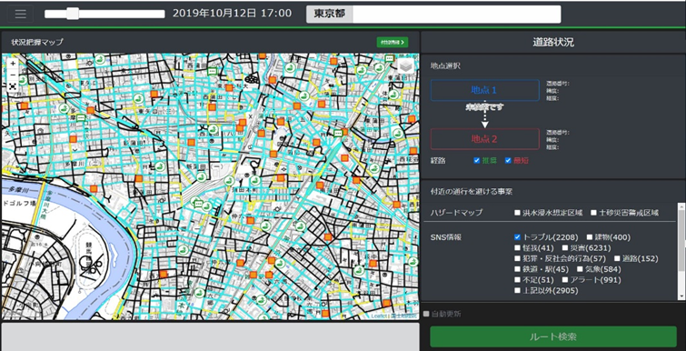
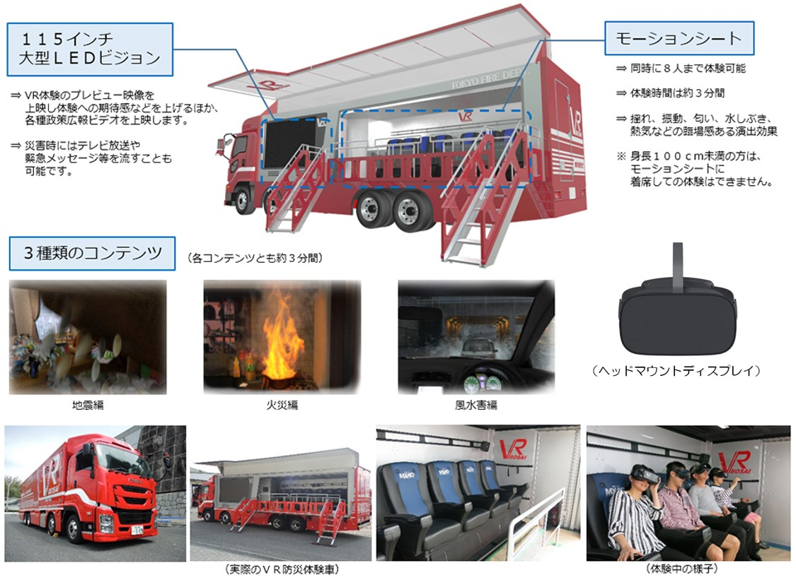

防災分野
+
以下では認知工学における防災分野にどのような種類があるのか、これらの将来について紹介しています。
種類
情報提示の最適化
災害情報を視覚的に分かりやすく表示するデザインや、重要な情報を強調する方法などを用いて災害時の急速に変化する情報を正確かつ効果的な情報伝達を行う。情報の内容や形式を最適化することを目標としています。

ハザードマップを認知工学の原則に基づいて作成することで、情報の可視化や理解を容易にします。地域の住民や関係者に対して、災害リスクや避難経路などの重要な情報をわかりやすく伝えることができます。
意思決定支援
災害時には迅速かつ適切な意思決定が求められることから認知工学の研究成果を活用して、意思決定をサポートするシステムを開発を試みている。情報の整理・要約やリスク評価ツールの開発などがあります。

最先端のVRシステムを使って災害現場を再現し、臨場感あふれる防災体験を可能にしたVR防災体験車。「火災」「地震」「津波」を体験できる。
トレーニングと教育
災害時には迅速な行動が求められるため、認知工学の知見を活かして、人々の認知能力や判断力を向上させるトレーニングプログラムやシミュレーション環境を開発し活用します。災害のシミュレーションや避難訓練の支援システムがあります
将来性
災害予知と早期警戒: 認知工学の研究成果を活用したセンサーやモニタリングシステムにより、異常なパターンや前兆を検知し、災害の予知と早期警戒が可能になります。例えば、地震や洪水、台風などの自然災害において、センサーネットワークやデータ解析により、異常な振動や水位の変動を検知して警戒を喚起することができます。
-
避難行動の支援: 認知工学の研究成果を活用した避難行動の支援システムが開発されます。避難経路の最適化や避難情報のリアルタイムな提供、人々の行動パターンや意思決定のモデリングに基づいた避難計画の作成などが行われます。これにより、避難者の安全性と避難効率が向上します。
-
災害時の情報共有と協調: 認知工学の研究は、災害時の情報共有と協調行動にも応用されます。情報の可視化や共有プラットフォームの開発により、関係機関や市民がリアルタイムで情報を共有し、災害対応の効率化が図られます。また、人々の協力行動やチームの調整に関する研究により、効果的な協力体制や災害時の意思決定支援が可能になります。
研究紹介
防災分野
.png)
運転支援技術